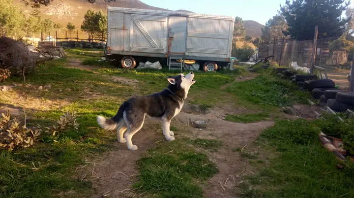

1. Select a Bark Context

Choose a model bark, or bring your own.
Or: read the whole dog
Barks are only one channel. Compare a pose, then explore an image of your own.
What can you actually see?
Choose every cue you can see; the pattern matters more than any single sign.
⚖️ Ethical Impact
This is an interpretive demo—not a scientific translator or behavioural diagnosis. Context and the dog in front of you matter most.
👂
Listening
🤝
Consent
📜
Guidelines
2. AI Processing
Wav2Vec2 Analysis
●
Emotion Extraction
●
Context Matching
●
Brain Scan Insight
Dogs value praise as much as food.
👋
Praise
🦴
Food
3. Decoded Message
...
Calm
Intense
Negative
Positive
VALENCE
🐕
Breed
G. Shep
♂️
Sex
Male
😐
Emotion
Neutral